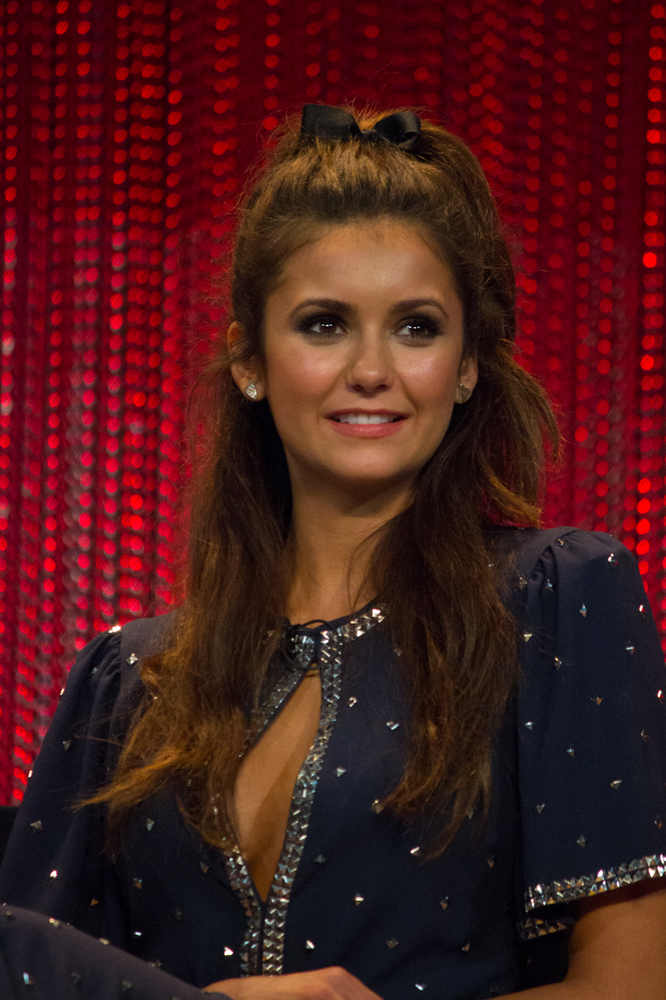
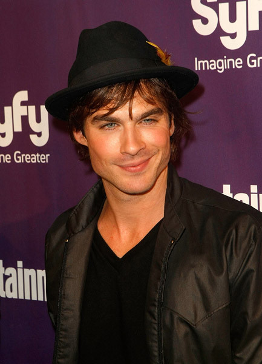
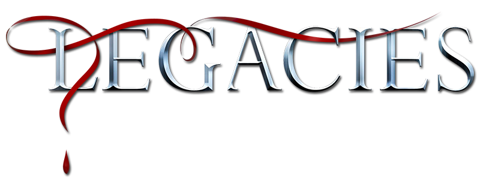

.png)
Crónicas Vampíricas, Los Orginales y Legacies
Detalles
Autora: Lisa Jane Smith
Género: Fantasía, Literatura Juvenil, Sobrenatural
Saga principal: La saga consta de: Despertar, Conflicto, Furia eInvocación.
Adaptaciones cinematográficas: The Vampire Diaries serie cinematográfica principal, a través de la cuál se desarrollan las diferentes sagas complementarias, The Orginals y Legacies.
Trailer de Crónicas Vampíricas T1:
Trailer de Los Originales T1:
Trailer de Legacies T1:
Sinopsis
Sinopsis de Crónicas Vampíricas:
Crónicas Vampíricas de L.J. Smith es una serie de novelas que cuenta la historia de Elena Gilbert, una adolescente que vive en la ciudad de Mystic Falls y se enamora de Stefan Salvatore, un vampiro que lucha por controlar su sed de sangre humana. La trama se complica cuando aparece Damon, el hermano mayor de Stefan, quien tiene una personalidad más oscura y peligrosa. A lo largo de la serie, Elena se ve envuelta en la lucha entre los vampiros y los cazadores de vampiros, y debe decidir de qué lado está su lealtad.
Sinopsis de Los Originales:
Los Originales es una serie de televisión que sigue la historia de la familia Mikaelson, los primeros vampiros originales del mundo. La trama se desarrolla en la ciudad de Nueva Orleans, donde los hermanos Klaus, Elijah y Rebekah regresan después de siglos de exilio en busca de su lugar en la ciudad y la consolidación de su poder en el mundo sobrenatural. A lo largo de la serie, enfrentan a varios enemigos, incluyendo a su propia familia y a otras criaturas sobrenaturales, mientras luchan por mantener el control de la ciudad y proteger a sus seres queridos. La serie también explora la compleja dinámica familiar de los Mikaelson y sus secretos oscuros del pasado.
Sinopsis de Legacies
La serie Legacies es un spin-off de "Los Originales" y sigue a la siguiente generación de seres sobrenaturales en la Escuela Salvatore para Jóvenes y Dotados en Mystic Falls. La serie se centra en Hope Mikaelson, hija de Klaus Mikaelson, junto con sus amigos vampiros, hombres lobo y brujas, mientras aprenden a controlar sus habilidades y luchan contra las fuerzas oscuras que amenazan su mundo sobrenatural. A medida que la serie avanza, se exploran nuevas relaciones y secretos se revelan en cada episodio.

Nina Dobrev actriz que da vida a Elena Gilbert y Katherine Pierce
Personajes
Los personajes que conforman la saga de Crónicas Vampíricas son:
Elena Gilbert
Elena Gilbert es la protagonistade la serie. Es una joven estudiante que se ve envuelta en el mundo sobrenatural cuando se enamora de un vampiro llamado Stefan Salvatore y su hermano Damon Salvatore. A lo largo de la serie, Elena se ve envuelta en peligrosas situaciones y debe tomar decisiones difíciles mientras lucha por proteger a sus seres queridos.
Damon Salvatore
Damon Salvatore es un vampiro y al principio es visto como el hermano malvado de Stefan, pero a medida que avanza la trama se revela que tiene un lado vulnerable y un amor apasionado por Elena, la protagonista femenina. Su personalidad oscila entre ser sarcástico y seductor, pero también impulsivo y violento.
Stefan Salvatore
Stefan Salvatore es uno de los protagonistas de la serie, es un vampiro que lucha constantemente con su naturaleza y su sed de sangre. A diferencia de su hermano mayor Damon, Stefan intenta llevar una vida más pacífica y alejada de la violencia. A lo largo de la serie, se enamora de Elena Gilbert y juntos luchan contra diferentes amenazas sobrenaturales.
Bonnie Bennett
Bonnie Bennett es una bruja poderosa y leal amiga de Elena Gilbert, a menudo se encuentra en peligro debido a su capacidad mágica, pero siempre está dispuesta a hacer lo que sea necesario para proteger a sus amigos. A lo largo de la serie, aprende a controlar mejor sus habilidades y se convierte en una fuerza clave en la lucha contra los vampiros y otros seres sobrenaturales que amenazan a Mystic Falls.

Ian Somerholder actor que interpreta a Damon Salvatore @Biddi2 by Flickr
Klaus Mikaelson
Klaus Mikaelson es un híbrido de vampiro y hombre lobo, y uno de los antagonistas principales de las primeras temporadas. Es temido por su poder y crueldad, pero también es conocido por su devoción hacia su familia y su anhelo de encontrar su lugar en el mundo. Después de su partida en la serie principal, Klaus se convirtió en el protagonista de su propio spin-off, Los Originales.
Caroline Forbes
Caroline Forbes es uno de los personajes principales de la serie. Al principio, Caroline es una chica superficial e insegura, pero a medida que la trama avanza, se convierte en una vampira fuerte e independiente. A lo largo de la serie, Caroline demuestra su lealtad a sus amigos y su habilidad para liderar.
Otros personajes:
- Alaric Saltzman
- Matt Donovan
- Jaime Lannister
- Jeremy Gilbert
- Enzo
Los personajes que conforman Los Orginales son:
Niklaus Mikaelson
Klaus Mikaelson es el personaje principal y líder de la familia Mikaelson. Es un híbrido de vampiro y hombre lobo, lo que lo hace poderoso y temido en el mundo sobrenatural. Klaus regresa a Nueva Orleans, su hogar ancestral, y se encuentra en medio de una lucha por el poder con las otras facciones sobrenaturales de la ciudad.

Joseph Morgan @Gage Skidmore by Wikimedia Commons
Elijah Mikaelson
Elijah Mikaelson es el segundo hijo más antiguo de la familia Mikaelson y es conocido por su naturaleza reflexiva y protectora hacia su familia. A lo largo de la serie, se ve a Elijah lidiando con su amor por su hermano Klaus, mientras intenta mantener un equilibrio entre la lealtad a su familia y su propia moralidad.
Rebekah Mikaelson
Rebekah Mikaelson es la hermana menor de Klaus y Elijah, y es conocida por ser emocionalmente impulsiva y tener un gran deseo de encontrar el amor y la felicidad. A lo largo de las series, Rebekah muestra una gran lealtad hacia su familia y lucha por encontrar su lugar en un mundo lleno de violencia y caos.
Freya Mikaelson
Freya Mikaelson es la hermana mayor de los Mikaelson y una poderosa bruja. Fue secuestrada por su tía Dahlia cuando era niña y se crió con ella en el Nuevo Mundo. Después de ser liberada por Klaus y sus hermanos, se une a ellos para proteger a su familia de los enemigos y lucha por mantenerlos unidos.
Davina Clare
Davina Claire es una bruja joven y poderosa que fue utilizada por muchos personajes por su habilidad para desbloquear hechizos antiguos. Davina fue la líder del aquelarre de Nueva Orleans en un momento y tuvo una relación complicada con Klaus Mikaelson.
Marcel Gerard
Marcel Gerard es un vampiro criado por Klaus Mikaelson en la ciudad de Nueva Orleans, quien lo adoptó y lo convirtió en su protegido y mano derecha. Marcel tiene una personalidad ambiciosa y carismática, lo que le permite convertirse en el líder de la comunidad sobrenatural de Nueva Orleans. A lo largo de la serie, Marcel lucha por mantener su posición de poder y equilibrar su lealtad hacia su familia adoptiva y su propiointerés.
Otros personajes:
- Hope Mikaelson
- Kol Mikaelson
- Camille O'Connel
- Jackson Kenner
Los personajes que conforman Legacies son:
Hope Mikaelson
Hope Mikaelson es la hija de Klaus Mikaelson y Hayley Marshall, y es la protagonista de la serie Legacies. Es una adolescente que posee habilidades sobrenaturales (trihíbrido) debido a su ascendencia de vampiro, hombre lobo y bruja, y está destinada a liderar una nueva generación de seres sobrenaturales en la Escuela Salvatore para Jóvenes y Superdotados. Hope es valiente, inteligente y poderosa, y lucha por aceptar y controlar sus dones mientras lidia con las complejidades de su vida amorosa y familiar.
Landon Kirby
Landon Kirby es un huérfano que ha pasado la mayor parte de su vida saltando de hogar en hogar. Más tarde descubre que es un ser sobrenatural y tiene una conexión con la misteriosa Escuela Salvatore para Jóvenes y Superdotados. A lo largo de la serie, Landon lucha por descubrir su verdadera identidad y su lugar en el mundo sobrenatural.
Josie Saltzman
Josie Saltzman es una de las protagonistas , hija de Alaric Saltzman y la difunta Jo Laughlin. Es una estudiante de la Escuela Salvatore para Jóvenes y Superdotados, y también es una bruja poderosa que lucha por encontrar un equilibrio entre su vida amorosa y su lealtad a su familia y amigos.
Lizzie Saltzman
"Lizzie Saltzman es una poderosa bruja y la hermana gemela de Josie Saltzman. Lucha con problemas de salud mental y una necesidad constante de atención, pero en el fondo se preocupa profundamente por sus seres queridos e intenta hacer lo que es correcto."
Otros personajes:
- MG
- Sebastian
Opinión personal
Opinión personal de Crónicas Vampíricas:
En mi opinión, Crónicas Vampíricas es una serie de televisión fascinante que me atrapó desde el primer episodio. Me encantó la forma en que los personajes se desarrollaron y evolucionaron a lo largo de las temporadas, y cómo se abordaron temas importantes como la vida, la muerte y la moralidad. Además, la dinámica de los vampiros y la forma en que interactuaban con los humanos siempre me mantuvo en tensión y con ganas de saber más. Aunque hubo algunas tramas que no me gustaron tanto, en general creo que la serie fue un éxito y definitivamente vale la pena verla.
Si no la has visto, te recomiendo que veas el trailer y te adentres en este mundo ⬆️(da click en la flecha)
Si quieres acceder a más información puedes acudir a la página de Fandom
Opinión personal de Los Originales:
Bajo mi punto de vista, Los Originales es una de las mejores series de televisión de vampiros que he visto. La trama es intrigante y los personajes son complejos y bien desarrollados, especialmente los hermanos Mikaelson. Me encanta cómo la serie explora la historia de la familia Mikaelson y su relación con Nueva Orleans. Además, la música y el ambiente oscuro y misterioso de la ciudad realmente complementan la trama. Definitivamente recomendaría esta serie a cualquier fanático de los dramas sobrenaturales.
Si no la has visto, te recomiendo que veas el trailer y te adentres en este mundo ⬆️(da click en la flecha)
Si quieres acceder a más información puedes acudir a la página de Fandom
Opinión personal de Legacies:
Creo que Legacies es una serie interesante y divertida de ver. Me gusta cómo han logrado mezclar los elementos de Crónicas Vampíricas y Los Originales, pero con un giro diferente en la trama centrada en la nueva generación de estudiantes de la escuela Salvatore. Aunque a veces puede ser predecible, me gusta el enfoque de la serie en la amistad, el amor y la lucha contra el mal en todas sus formas. Además, el desarrollo de los personajes me ha mantenido enganchado y quiero saber más sobre su futuro.
Si no la has visto, te recomiendo que veas el trailer y te adentres en este mundo ⬆️(da click en la flecha)
Cabecera de Legacies @TheVampire by Wikimedia Commons
Si quieres acceder a más información puedes acudir a la página de Fandom